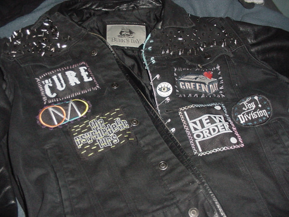
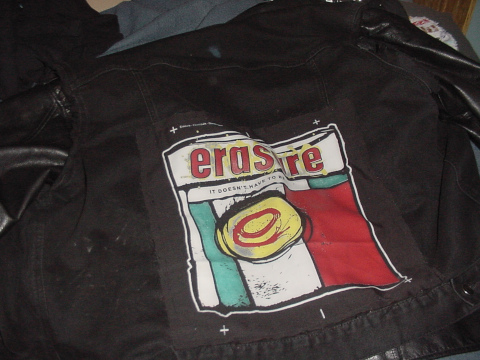
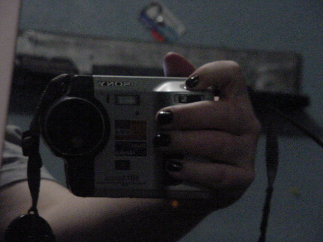
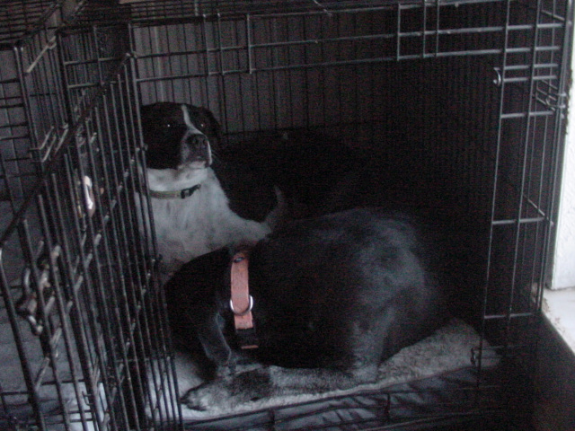
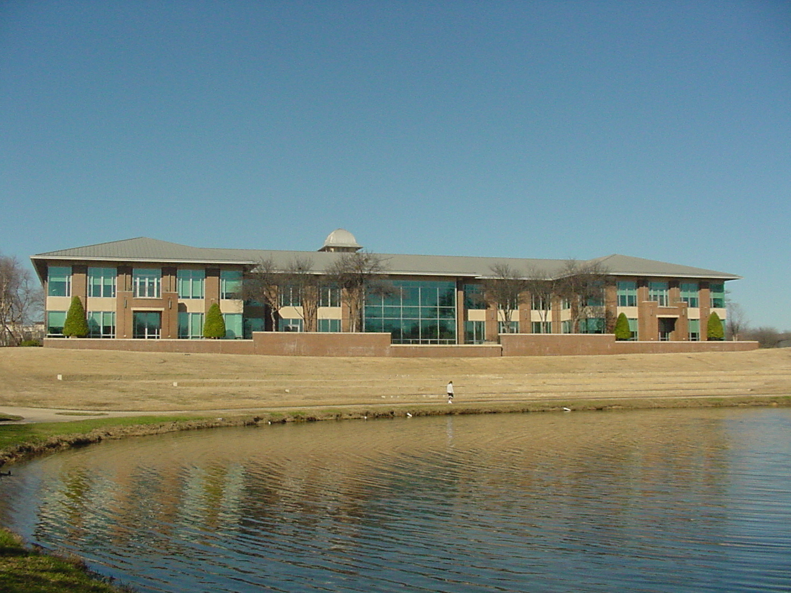
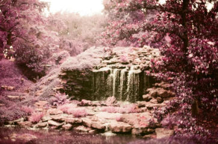
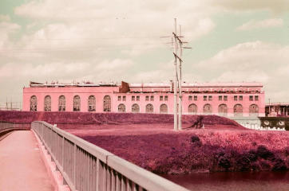

this is aspen's site


im not making seperate pages for everything
its just a rpi 4b with a lte module strapped on. with a weird display that im set to replace.

(and if your wondering where i get such amazing photos, its none less than the incredible sony mavica)
most of the work is in debugging and the like. and also reading the AT command manual. the lte module itself was designed to work as a hat for the rpi zero but that just had strange issues that led me to just use a more powerful sbc
i do condone music piracy and is my favorite way to do it
i like the diy nature of punk and battle jackets of metal but mostly listen to post-punk at the moment. so heres my jacket/vest
color rendering on the camera is bleh but all the embroidery thread used to attach it are fun colors
i used to just listen to generic 80s pop but after getting into the more 'alternative' acts i can hardly go back. i also listen to lots of other music from other eras but yapping about smooth jazz or dnb isnt fun
as mentioned before, my current and only camera right now is the wonderful sony mavica. it takes quite nice photos if you dont shoot onto floppy disks and instead use sony's proprietary memory stick
here it is taking its selfie
and here are my dogs
an unscaled image to show this cameras true prowess
assorted pictures from around town, taken on my old film camera
 oh and if you would really like to just see my old site that had css then here u go